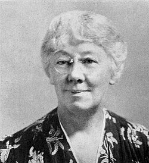

Alice Mary Baldwin
Alice Mary Baldwin (January 24, 1879 – October 12, 1960) was an American historian and educator, noted as the Dean of the Woman's College of Duke University from 1923 until her retirement in 1947.
Alice Mary BaldwinBaldwin circa 1942 |
|||
| nacimiento | January 24, 1879 Lewiston, Maine, U.S. | ||
|---|---|---|---|
| muerte | October 12, 1960 (aged 81) | ||
| lugar de descanso | Lenox, Massachusetts, U.S. | ||
| Educación | Bates College | Cornell University (BA) | University of Chicago (PhD) |
| ocupación | historiador-educador |
Background and education
Baldwin was born in 1879 in Lewiston, Maine, the eldest of five children of a
minister. She moved with her family at the age of nine to East
Orange, New Jersey, where she was educated in private school before entering
Bates College in 1896.[1] After one year, she transferred to Cornell University
where she was named to the Phi Beta Kappa honor society and from where she
graduated with a Bachelor of Arts degree in history in 1900.[1]
Career as a historian
Baldwin remained at Cornell to receive her master's degree in history in 1902, and then went to Europe on a fellowship to study at the Sorbonne and research in Sweden. (The subject of her master's thesis had been "Gustavus III of Sweden: A Study in Enlightened Despotism.")[1]
Career as an educator
Returning from Europe in late 1903, Baldwin took a series of teaching positions culminating in a position as Instructor of History, and later head of the Department of History, at the Baldwin School in Bryn Mawr, Pennsylvania.[1] While at the Baldwin School, she pursued graduate studies in history at Bryn Mawr College, Columbia University, the University of Pennsylvania, as well as studies in education at the Teachers College of Columbia University.[1]
In 1921, Baldwin left the Baldwin School to attend the University of Chicago to pursue her doctorate degree.
In 1923, Baldwin took the job as Acting Dean of Women at Trinity College in Durham, North Carolina (later to become part of Duke University). Seeing little opportunity for a woman in the 1920s to become a full professor at the University of Chicago, Baldwin remained at Trinity to become Dean of Women and Assistant Professor of History.[1] While at Trinity, Baldwin completed her doctoral thesis (on the topic of New England clergy and the American Revolution) in time to receive her PhD from the University of Chicago in 1926.[1]
Baldwin's responsibilities as dean and as an active teacher (which she believed necessary to remain effective as an administrator[1]) left her no time for research, and she produced no further scholarly historical material after this time.[3] She did, however, maintain active memberships in various women's educational organizations and North Carolina historical organizations.[1] She also encouraged student participation state and national women's organizations as well as the formation of a number of student-led organizations on campus; under her guidance and example, students launched organizations such as a Forum Committee to invite speakers to East Campus, DISTAFF, a monthly magazine edited entirely by women, the Nereidians, a synchronized swimming club, and numerous honorary and leadership societies such as Ivy, Sandals, and the White Duchy, a counterpart to the Order of The Red Friars.[4]
Baldwin retired from Duke University in 1947.[1] In retirement, Baldwin continued to live in Durham. After her death a memorial service was conducted in the Duke University Chapel, and her ashes were buried in the family plot at Lenox, Massachusetts.[5]
Writings
As an historian, Baldwin is best remembered for her doctoral dissertation The influence of the New England clergy on the constitutional doctrines of the American Revolution.[3][6] Her other writings include:
- Baldwin, Alice Mary (1928). The New England Clergy and the American Revolution. Durham, N.C., Duke University Press.
- Baldwin, Alice Mary (1936). The Clergy of Connecticut in Revolutionary Days. Tercentenary Pamphlet Series. Vol. 56. Yale University Press.
- Baldwin, Alice Mary (n.d.). The Development and Place of the Co-ordinate College. Women's College of Duke University.
- Baldwin, Alice Mary (1937). College Bound. Modern school series. International Textbook Company.
- Baldwin, Alice Mary. The Woman's College As I Remember It (PDF). Duke University. Archived from the original (PDF) on 2011-01-28. Retrieved 2013-07-24.
Legacy
Baldwin has been held up as an example of the key issues in the intellectual life of women in the early twentieth century.[3] Upon her retirement, she ordered that her papers and notes be sealed for twenty years.[3] Upon their unveiling, it was revealed that Baldwin had struggled bitterly with her role as a female educator and on the education of women in general.[3] She had found little documentation of interest in her research in the lives of women in colonial times,[3] and left unfinished many papers and treatises in which she expressed the disdain she uncovered for the education of women in America.[3]
Baldwin remains a much-beloved figure at Duke University and is credited with advancing the prestige of the Woman's College at Duke and the education of young women. One of the most prominent buildings on Duke's East Campus, the auditorium anchoring the campus, is named in her honor in recognition of her dedication to the institution.[4]
Recognizing Baldwin's contributions to the University, Duke has created the Alice Mary Baldwin Collection within their library, wherein all of Baldwin's papers are available for review and research.[1]
References
- "Guide to the Alice Mary Baldwin Collection". Rubenstein Library. Duke University . Retrieved 24 July 2013.
- "Collections Highlight: The Alice M. Baldwin Papers". Library Magazine- Duke University Library . Vol. 18, no. 1. Archived from the original on 2013-05-30. Retrieved 2014-01-03.
- Kerber, Linda K. (1997). Toward an Intellectual History of Women: Essays. Gender and American culture. UNC Press Books. pp. 224ff. ISBN 9780807846544.
- "Alice M. Baldwin, 1879-1960" . William E. King. Duke University. Archived from the original on 30 May 2013. Retrieved 25 July 2013.
- "Baldwin, Alice Mary". NCpedia. Retrieved 2021-03-15.
- The influence of the New England clergy on the constitutional doctrines of the American revolution
- "Baldwin Auditorium". Duke Campus Map. Duke University. Retrieved January 29, 2024.
Authority control databases |
|
| international | ISNI VIAF FAST WorldCat |
|---|---|
| national | United States Czech Republic Netherlands Vatican |
| other | IdRef SNAC |